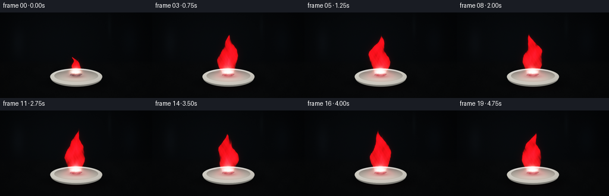
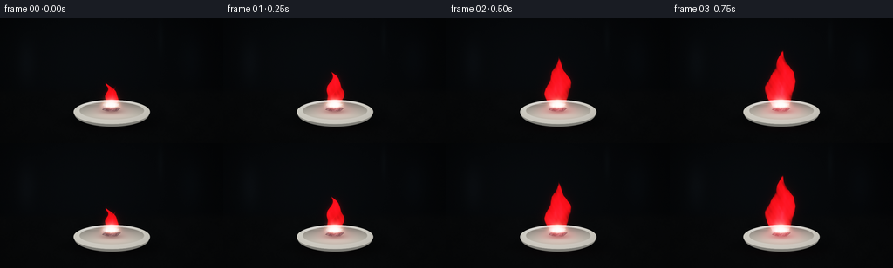

CODING AGENTS AS PIXEL WORLD MODELS
traex/GPT-6.1-Sol · phygen_128
点击播放 · 原生 RGB 像素
逐轮保存的候选
回放视频、检查图与代码变化。
每份候选均可单独播放。实际图片检查记录在下方工具轨迹中。
候选 01播放与检查图
点击播放 · 原生 RGB 像素


展开代码变化
--- 上一保存版本
+++ 本次保存版本
@@ -0,0 +1,163 @@
+from pathlib import Path
+import math
+import numpy as np
+from PIL import Image, ImageDraw, ImageFilter
+import artifact_io
+
+ROOT=Path(__file__).resolve().parent
+W,H,S=256,144,3
+w,h=W*S,H*S
+Y,X=np.mgrid[0:h,0:w].astype(np.float32)/S
+rng=np.random.default_rng(138)
+
+def smooth(a,b,v):
+ v=np.clip((v-a)/(b-a),0,1)
+ return v*v*(3-2*v)
+
+def ellipse(cx,cy,rx,ry):
+ return ((X-cx)/rx)**2+((Y-cy)/ry)**2
+
+def mask_poly(points):
+ im=Image.new('L',(w,h)); d=ImageDraw.Draw(im)
+ d.polygon([(round(x*S),round(y*S)) for x,y in points],fill=255)
+ return np.asarray(im,dtype=np.float32)/255
+
+def noise_field(seed,scale):
+ rr=np.random.default_rng(seed)
+ a=rr.integers(0,256,(math.ceil(h/scale)+3,math.ceil(w/scale)+3),dtype=np.uint8)
+ return np.asarray(Image.fromarray(a).resize((w,h),Image.Resampling.BICUBIC),dtype=np.float32)/255-.5
+
+# A subdued laboratory worktop; distant forms are deliberately out of focus.
+back=np.zeros((h,w,3),np.float32)
+back[:]=[.018,.023,.029]
+back+=np.exp(-((X-91)/122)**2-((Y-43)/84)**2)[...,None]*np.array([.014,.020,.025])
+# Faint defocused vertical lab apparatus in the background.
+for cx,cy,rx,ry,col in [(30,50,13,32,[.017,.022,.027]),(219,47,17,35,[.009,.014,.020]),(184,22,4,24,[.012,.017,.019])]:
+ back+=np.exp(-ellipse(cx,cy,rx,ry)*1.7)[...,None]*np.array(col)
+bench=smooth(78,89,Y)
+back=back*(1-bench[...,None])+bench[...,None]*np.array([.033,.038,.042])
+texture=noise_field(43,5)*.004+noise_field(90,40)*.006
+back+=bench[...,None]*texture[...,None]
+vign=np.clip(1-.35*((X-128)/151)**2-.28*((Y-71)/105)**2,.35,1)
+back*=vign[...,None]
+# Shallow white ceramic evaporating dish, with ellipse perspective and a soft shadow.
+shadow=np.exp(-ellipse(130,120,57,12)*1.8)
+back*=1-.64*shadow[...,None]
+outer=ellipse(128,108,44,14)
+foot=ellipse(128,115.4,27,7.8)
+footmask=1-smooth(.93,1.03,foot)
+base_col=np.stack([.40+.10*(Y-111)/13,.42+.10*(Y-111)/13,.43+.10*(Y-111)/13],axis=-1)
+back=back*(1-footmask[...,None])+base_col*footmask[...,None]
+# Front bowl's curved wall.
+side=1-smooth(.96,1.02,ellipse(128,110,43,15))
+walllight=np.clip(.74-.27*(Y-109)/15,.4,.78)
+walllight-=.1*((X-128)/44)**2
+wallcol=np.stack([walllight*1.01,walllight,walllight*.95],-1)
+back=back*(1-side[...,None])+wallcol*side[...,None]
+rim=1-smooth(.974,1.013,outer)
+rimshade=.84-.12*((X-119)/70)**2-.05*(Y-102)/18
+rimcol=np.stack([rimshade,rimshade*.99,rimshade*.945],-1)
+back=back*(1-rim[...,None])+rimcol*rim[...,None]
+# Well, inner slope, and gently curved bottom.
+inner=ellipse(128,106.5,37.2,10.2)
+inner_mask=1-smooth(.96,1.02,inner)
+wellshade=.58+.20*np.clip((Y-100)/13,0,1)
+wellshade-=.06*np.clip(inner,0,1)
+wellcol=np.stack([wellshade*1.015,wellshade,wellshade*.94],-1)
+back=back*(1-inner_mask[...,None])+wellcol*inner_mask[...,None]
+# Bright top lip and a small ceramic specular highlight.
+line=np.exp(-((outer-1)/.025)**2)*smooth(110,101,Y)
+back+=line[...,None]*np.array([.10,.10,.092])
+back+=np.exp(-ellipse(103,99,13,1.1)*2)[...,None]*np.array([.1,.1,.09])
+# A rough lithium fragment with faceted silver-gray surfaces and oxidised edges.
+metal_outline=[(116.4,101.5),(119.2,97.9),(127.1,97.1),(136.6,99.1),(138.4,103.2),(134.0,106.9),(122.8,107.4),(117.0,105.5)]
+metal=mask_poly(metal_outline)
+metal_shadow=np.exp(-ellipse(128,107.5,15,3.6)*1.6)
+back*=1-.35*metal_shadow[...,None]*inner_mask[...,None]
+facets=[([(116.4,101.5),(119.2,97.9),(127.1,97.1),(124.6,101.3),(118.7,103.8)],[.55,.57,.57]),
+ ([(127.1,97.1),(136.6,99.1),(133.0,102.1),(124.6,101.3)],[.71,.73,.72]),
+ ([(118.7,103.8),(124.6,101.3),(133,102.1),(138.4,103.2),(134,106.9),(122.8,107.4),(117,105.5)],[.32,.35,.35])]
+metal_texture=noise_field(31,3)*.13+noise_field(33,13)*.10
+for pts,col in facets:
+ m=mask_poly(pts)
+ c=np.array(col)[None,None,:]+metal_texture[...,None]
+ back=back*(1-m[...,None])+c*m[...,None]
+# A little white crust around the reaction, no unrealistic showers of sparks.
+for k in range(19):
+ cx=rng.uniform(118,137); cy=rng.uniform(100,107)
+ speck=np.exp(-ellipse(cx,cy,rng.uniform(.35,1),rng.uniform(.2,.55))*2)*metal
+ back+=speck[...,None]*rng.uniform(.035,.12)
+
+# Analytic smoothly advected turbulent fields; the same noise moves upward between frames.
+def turb(x,y,t):
+ return (np.sin(x*.139+y*.155-t*4.6+1.3*np.sin(y*.077-t*2.2))*.48
+ +np.sin(x*.324-y*.248+t*7.3+np.sin(x*.049+y*.083))*.26
+ +np.sin(x*.677+y*.438-t*11.2)*.15
+ +np.sin(x*1.303-y*.825+t*16.5)*.075)
+
+frames=[]
+for frame in range(20):
+ t=frame/4
+ # Ignition at the exposed surface grows quickly into a steady crimson lithium flame.
+ growth=.43+.57*smooth(0,.73,t)
+ height=(65+3.2*np.sin(t*4.8)+2.0*np.sin(t*9.7))*growth
+ z=(102-Y)/height
+ zz=np.clip(z,0,1)
+ drift=(3.8*np.sin(zz*5.1-t*3.4)+2.5*np.sin(zz*10.9-t*5.9))*(zz**.9)
+ center=127.0+drift
+ width=(9.0+15.5*np.sin(np.pi*zz)**1.15)*(1-zz)**.75*growth
+ n=turb(X,Y,t)
+ # An irregular luminous three-dimensional envelope, integrated through its depth.
+ radius=(X-center)/(width+.3)
+ envelope=1-radius**2
+ perturb=(.07+.38*zz)*n
+ support=smooth(-.06,.08,envelope+perturb)*smooth(-.045,.03,z)*(1-smooth(.90,1.035,z+.055*n))
+ # Main plume has translucent turbulent cavities, bright folded edges, and soft depth.
+ thickness=np.sqrt(np.clip(envelope+perturb,0,1))
+ fine=turb(X+26,Y-15,t+.23)
+ folds=.58+.27*n+.18*fine
+ emission=support*(.34+1.7*thickness)*np.clip(folds,.12,1.2)
+ emission*=.70+.3*np.sin(zz*np.pi)
+ # Narrow wandering inner streaks rising from different points of the metal.
+ for k,(dx,hh,ww) in enumerate([(-4,.65,4),(3,.91,4.5),(0,.49,3.8)]):
+ localz=(102-Y)/(height*hh)
+ path=127+dx+(2.7*np.sin(localz*7-t*(4+k)+k))*np.clip(localz,0,1)
+ wid=ww*growth*np.maximum(1-np.clip(localz,0,1),0)**.8+.15
+ stream=np.exp(-((X-path)/wid)**2*1.5)*smooth(-.04,.03,localz)*(1-smooth(.80,1.0,localz))
+ stream*=np.clip(.55+.40*turb(X+12*k,Y,t+.2*k),.1,1)
+ emission+=stream*.75
+ # Lithium's characteristic saturated carmine red, not the orange of sodium.
+ hot=np.exp(-ellipse(127,100.7,7.4,6.6)*1.25)*smooth(105,100,Y)
+ lower=np.exp(-np.maximum(z,0)*5.5)
+ rad=np.stack([emission*1.42, emission*(.015+.17*lower),emission*(.042+.17*lower)],-1)
+ rad+=hot[...,None]*np.array([1.9,1.15,.92])
+ # Short white-pink combustion points rooted on the lithium itself.
+ for k in range(3):
+ cx=122.5+k*4.1+.35*np.sin(7*t+k)
+ spot=np.exp(-ellipse(cx,100.2+.5*np.sin(k+t),1.2,1.8)*1.8)
+ rad+=spot[...,None]*np.array([1.0,.68,.48])
+ flicker=.94+.05*np.sin(t*11)+.025*np.sin(t*21)
+ rad*=flicker
+ scene=back.copy()
+ # Reflected crimson illumination on the porcelain and near the metal.
+ reflect=np.exp(-ellipse(128,106,25,10)*1.6)*rim
+ scene+=reflect[...,None]*np.array([.35,.023,.048])*growth*flicker
+ scene+=metal[...,None]*np.exp(-ellipse(127,101,12,7))[...,None]*np.array([.20,.036,.042])*growth
+ deskglow=np.exp(-ellipse(128,126,45,7)*1.8)*bench*(1-side)
+ scene+=deskglow[...,None]*np.array([.018,.001,.003])*growth
+ # Optical bloom: small core and a restrained broad red aura.
+ glowim=Image.fromarray(np.uint8(np.clip(rad/3.5,0,1)*255))
+ bloom=np.asarray(glowim.filter(ImageFilter.GaussianBlur(2.1*S)),np.float32)/255*3.5
+ halo=np.asarray(glowim.filter(ImageFilter.GaussianBlur(7*S)),np.float32)/255*3.5
+ scene+=rad+bloom*.21+halo*.075
+ # Simple filmic shoulder retains the bright cores without making a flat white flame.
+ scene=np.maximum(scene,0)
+ scene=np.where(scene<.8,scene, .8+.2*(1-np.exp(-(scene-.8)/.4)))
+ # Scene values are photographic/display intensities, with restrained grain.
+ grain=np.random.default_rng(700+frame).normal(0,.0016,(h,w,1))
+ scene=np.clip(scene+grain,0,1)
+ image=Image.fromarray(np.uint8(scene*255)).resize((W,H),Image.Resampling.LANCZOS)
+ frames.append(np.asarray(image))
+
+artifact_io.save(np.stack(frames).astype(np.uint8),ROOT)
+print('Saved 20 RGB frames, 256x144 at 4 fps.')
可观测工具轨迹
实际执行的命令与返回图片。
命令 1exit 0
/bin/bash -lc 'ls -la && cat prompt.txt && cat GENERATION_RULES.md && cat task_spec.json'
命令 2exit 0
/bin/bash -lc "cat artifact_io.py && python - <<'PY'
import numpy,PIL
print('numpy and PIL available')
PY"命令 3exit 0
/bin/bash -lc "cat > generate.py <<'PY'
from pathlib import Path
import math
import numpy as np
from PIL import Image, ImageDraw, ImageFilter
import artifact_io
ROOT=Path(__file__).resolve().parent
W,H,S=256,144,3
w,h=W*S,H*S
Y,X=np.mgrid[0:h,0:w].astype(np.float32)/S
rng=np.random.default_rng(138)
def smooth(a,b,v):
v=np.clip((v-a)/(b-a),0,1)
return v*v*(3-2*v)
def ellipse(cx,cy,rx,ry):
return ((X-cx)/rx)**2+((Y-cy)/ry)**2
def mask_poly(points):
im=Image.new('L',(w,h)); d=ImageDraw.Draw(im)
d.polygon([(round(x*S),round(y*S)) for x,y in points],fill=255)
return np.asarray(im,dtype=np.float32)/255
def noise_field(seed,scale):
rr=np.random.default_rng(seed)
a=rr.integers(0,256,(math.ceil(h/scale)+3,math.ceil(w/scale)+3),dtype=np.uint8)
return np.asarray(Image.fromarray(a).resize((w,h),Image.Resampling.BICUBIC),dtype=np.float32)/255-.5
# A subdued laboratory worktop; distant forms are deliberately out of focus.
back=np.zeros((h,w,3),np.float32)
back[:]=[.018,.023,.029]
back+=np.exp(-((X-91)/122)**2-((Y-43)/84)**2)[...,None]*np.array([.014,.020,.025])
# Faint defocused vertical lab apparatus in the background.
for cx,cy,rx,ry,col in [(30,50,13,32,[.017,.022,.027]),(219,47,17,35,[.009,.014,.020]),(184,22,4,24,[.012,.017,.019])]:
back+=np.exp(-ellipse(cx,cy,rx,ry)*1.7)[...,None]*np.array(col)
bench=smooth(78,89,Y)
back=back*(1-bench[...,None])+bench[...,None]*np.array([.033,.038,.042])
texture=noise_field(43,5)*.004+noise_field(90,40)*.006
back+=bench[...,None]*texture[...,None]
vign=np.clip(1-.35*((X-128)/151)**2-.28*((Y-71)/105)**2,.35,1)
back*=vign[...,None]
# Shallow white ceramic evaporating dish, with ellipse perspective and a soft shadow.
shadow=np.exp(-ellipse(130,120,57,12)*1.8)
back*=1-.64*shadow[...,None]
outer=ellipse(128,108,44,14)
foot=ellipse(128,115.4,27,7.8)
footmask=1-smooth(.93,1.03,foot)
base_col=np.stack([.40+.10*(Y-111)/13,.42+.10*(Y-111)/13,.43+.10*(Y-111)/13],axis=-1)
back=back*(1-footmask[...,None])+base_col*footmask[...,None]
# Front bowl's curved wall.
side=1-smooth(.96,1.02,ellipse(128,110,43,15))
walllight=np.clip(.74-.27*(Y-109)/15,.4,.78)
walllight-=.1*((X-128)/44)**2
wallcol=np.stack([walllight*1.01,walllight,walllight*.95],-1)
back=back*(1-side[...,None])+wallcol*side[...,None]
rim=1-smooth(.974,1.013,outer)
rimshade=.84-.12*((X-119)/70)**2-.05*(Y-102)/18
rimcol=np.stack([rimshade,rimshade*.99,rimshade*.945],-1)
back=back*(1-rim[...,None])+rimcol*rim[...,None]
# Well, inner slope, and gently curved bottom.
inner=ellipse(128,106.5,37.2,10.2)
inner_mask=1-smooth(.96,1.02,inner)
wellshade=.58+.20*np.clip((Y-100)/13,0,1)
wellshade-=.06*np.clip(inner,0,1)
wellcol=np.stack([wellshade*1.015,wellshade,wellshade*.94],-1)
back=back*(1-inner_mask[...,None])+wellcol*inner_mask[...,None]
# Bright top lip and a small ceramic specular highlight.
line=np.exp(-((outer-1)/.025)**2)*smooth(110,101,Y)
back+=line[...,None]*np.array([.10,.10,.092])
back+=np.exp(-ellipse(103,99,13,1.1)*2)[...,None]*np.array([.1,.1,.09])
# A rough lithium fragment with faceted silver-gray surfaces and oxidised edges.
metal_outline=[(116.4,101.5),(119.2,97.9),(127.1,97.1),(136.6,99.1),(138.4,103.2),(134.0,106.9),(122.8,107.4),(117.0,105.5)]
metal=mask_poly(metal_outline)
metal_shadow=np.exp(-ellipse(128,107.5,15,3.6)*1.6)
back*=1-.35*metal_shadow[...,None]*inner_mask[...,None]
facets=[([(116.4,101.5),(119.2,97.9),(127.1,97.1),(124.6,101.3),(118.7,103.8)],[.55,.57,.57]),
([(127.1,97.1),(136.6,99.1),(133.0,102.1),(124.6,101.3)],[.71,.73,.72]),
([(118.7,103.8),(124.6,101.3),(133,102.1),(138.4,103.2),(134,106.9),(122.8,107.4),(117,105.5)],[.32,.35,.35])]
metal_texture=noise_field(31,3)*.13+noise_field(33,13)*.10
for pts,col in facets:
m=mask_poly(pts)
c=np.array(col)[None,None,:]+metal_texture[...,None]
back=back*(1-m[...,None])+c*m[...,None]
# A little white crust around the reaction, no unrealistic showers of sparks.
for k in range(19):
cx=rng.uniform(118,137); cy=rng.uniform(100,107)
speck=np.exp(-ellipse(cx,cy,rng.uniform(.35,1),rng.uniform(.2,.55))*2)*metal
back+=speck[...,None]*rng.uniform(.035,.12)
# Analytic smoothly advected turbulent fields; the same noise moves upward between frames.
def turb(x,y,t):
return (np.sin(x*.139+y*.155-t*4.6+1.3*np.sin(y*.077-t*2.2))*.48
+np.sin(x*.324-y*.248+t*7.3+np.sin(x*.049+y*.083))*.26
+np.sin(x*.677+y*.438-t*11.2)*.15
+np.sin(x*1.303-y*.825+t*16.5)*.075)
frames=[]
for frame in range(20):
t=frame/4
# Ignition at the exposed surface grows quickly into a steady crimson lithium flame.
growth=.43+.57*smooth(0,.73,t)
height=(65+3.2*np.sin(t*4.8)+2.0*np.sin(t*9.7))*growth
z=(102-Y)/height
zz=np.clip(z,0,1)
drift=(3.8*np.sin(zz*5.1-t*3.4)+2.5*np.sin(zz*10.9-t*5.9))*(zz**.9)
center=127.0+drift
width=(9.0+15.5*np.sin(np.pi*zz)**1.15)*(1-zz)**.75*growth
n=turb(X,Y,t)
# An irregular luminous three-dimensional envelope, integrated through its depth.
radius=(X-center)/(width+.3)
envelope=1-radius**2
perturb=(.07+.38*zz)*n
support=smooth(-.06,.08,envelope+perturb)*smooth(-.045,.03,z)*(1-smooth(.90,1.035,z+.055*n))
# Main plume has translucent turbulent cavities, bright folded edges, and soft depth.
thickness=np.sqrt(np.clip(envelope+perturb,0,1))
fine=turb(X+26,Y-15,t+.23)
folds=.58+.27*n+.18*fine
emission=support*(.34+1.7*thickness)*np.clip(folds,.12,1.2)
emission*=.70+.3*np.sin(zz*np.pi)
# Narrow wandering inner streaks rising from different points of the metal.
for k,(dx,hh,ww) in enumerate([(-4,.65,4),(3,.91,4.5),(0,.49,3.8)]):
localz=(102-Y)/(height*hh)
path=127+dx+(2.7*np.sin(localz*7-t*(4+k)+k))*np.clip(localz,0,1)
wid=ww*growth*np.maximum(1-np.clip(localz,0,1),0)**.8+.15
stream=np.exp(-((X-path)/wid)**2*1.5)*smooth(-.04,.03,localz)*(1-smooth(.80,1.0,localz))
stream*=np.clip(.55+.40*turb(X+12*k,Y,t+.2*k),.1,1)
emission+=stream*.75
# Lithium's characteristic saturated carmine red, not the orange of sodium.
hot=np.exp(-ellipse(127,100.7,7.4,6.6)*1.25)*smooth(105,100,Y)
lower=np.exp(-np.maximum(z,0)*5.5)
rad=np.stack([emission*1.42, emission*(.015+.17*lower),emission*(.042+.17*lower)],-1)
rad+=hot[...,None]*np.array([1.9,1.15,.92])
# Short white-pink combustion points rooted on the lithium itself.
for k in range(3):
cx=122.5+k*4.1+.35*np.sin(7*t+k)
spot=np.exp(-ellipse(cx,100.2+.5*np.sin(k+t),1.2,1.8)*1.8)
rad+=spot[...,None]*np.array([1.0,.68,.48])
flicker=.94+.05*np.sin(t*11)+.025*np.sin(t*21)
rad*=flicker
scene=back.copy()
# Reflected crimson illumination on the porcelain and near the metal.
reflect=np.exp(-ellipse(128,106,25,10)*1.6)*rim
scene+=reflect[...,None]*np.array([.35,.023,.048])*growth*flicker
scene+=metal[...,None]*np.exp(-ellipse(127,101,12,7))[...,None]*np.array([.20,.036,.042])*growth
deskglow=np.exp(-ellipse(128,126,45,7)*1.8)*bench*(1-side)
scene+=deskglow[...,None]*np.array([.018,.001,.003])*growth
# Optical bloom: small core and a restrained broad red aura.
glowim=Image.fromarray(np.uint8(np.clip(rad/3.5,0,1)*255))
bloom=np.asarray(glowim.filter(ImageFilter.GaussianBlur(2.1*S)),np.float32)/255*3.5
halo=np.asarray(glowim.filter(ImageFilter.GaussianBlur(7*S)),np.float32)/255*3.5
scene+=rad+bloom*.21+halo*.075
# Simple filmic shoulder retains the bright cores without making a flat white flame.
scene=np.maximum(scene,0)
scene=np.where(scene<.8,scene, .8+.2*(1-np.exp(-(scene-.8)/.4)))
# Scene values are photographic/display intensities, with restrained grain.
grain=np.random.default_rng(700+frame).normal(0,.0016,(h,w,1))
scene=np.clip(scene+grain,0,1)
image=Image.fromarray(np.uint8(scene*255)).resize((W,H),Image.Resampling.LANCZOS)
frames.append(np.asarray(image))
artifact_io.save(np.stack(frames).astype(np.uint8),ROOT)
print('Saved 20 RGB frames, 256x144 at 4 fps.')
PY
python generate.py"命令 4exit 0
/bin/bash -lc "python - <<'PY'
from pathlib import Path
import numpy as np
from PIL import Image
p=np.load('pixels.npz')['pixels']
assert p.shape==(144,256,20)
f=np.stack([np.asarray(Image.open(f'frames/{i:02d}.png')) for i in range(20)])
assert f.shape==(20,144,256,3) and f.dtype==np.uint8
print('Validated shape, dtype and 20 frames.')
print('Required artifacts:', ', '.join(x for x in ['generate.py','pixels.npz','index.html','inspection.png','transition_check.png'] if Path(x).exists()))
PY
if command -v ffmpeg >/dev/null 2>&1; then ffmpeg -hide_banner -loglevel error -y -framerate 4 -i frames/%02d.png -c:v libx264 -crf 18 -pix_fmt yuv420p -movflags +faststart video.mp4 && ls -lh video.mp4; fi"保存候选 1 份；完成命令 4 次；可验证图片返回 0 张。原始 API 响应与完整日志保留在本地。